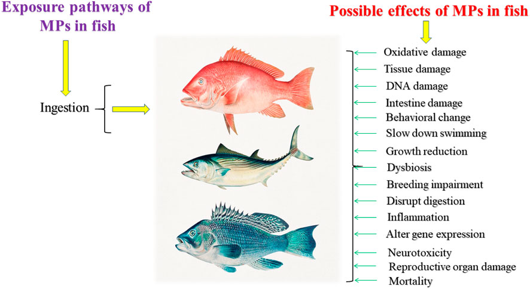
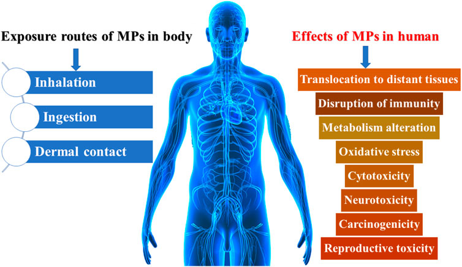
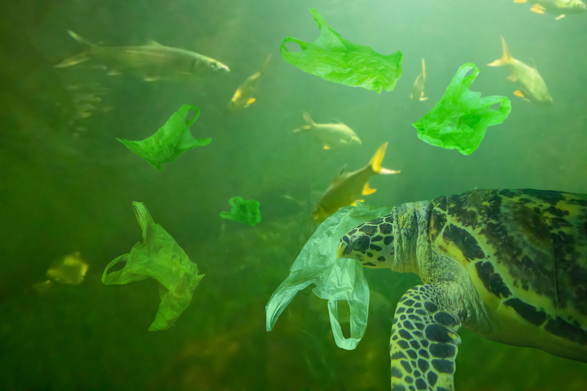
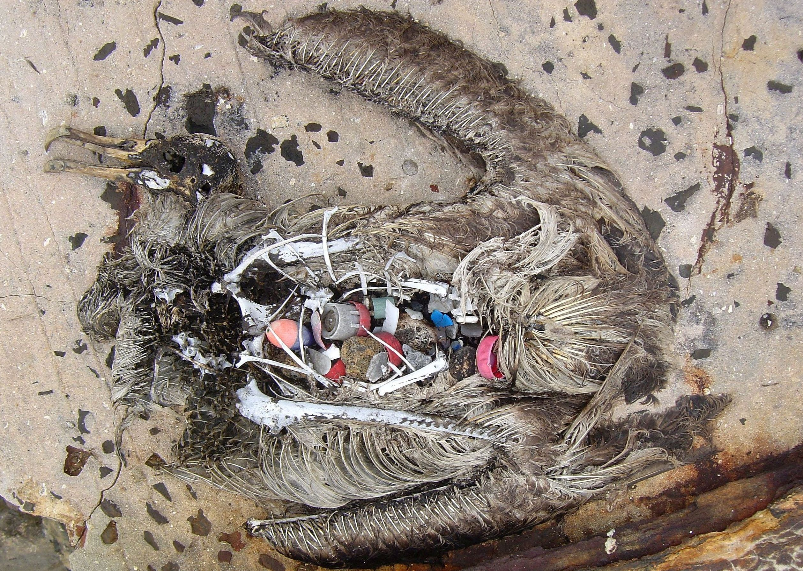
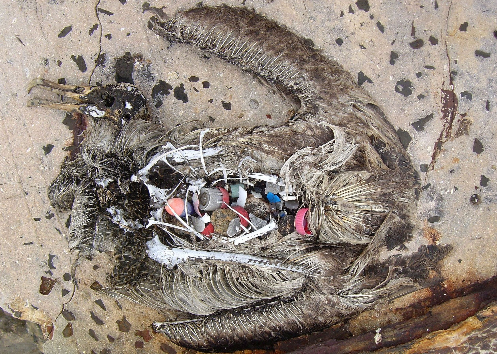

"Microplastics, abandoned fishing gear and other plastic pollution are among our biggest environmental threats. It’s hurting sea animals and making them sick"
-World Animal Protection
Fish-in the North Pacific, fish are ingesting 12,000 to 24,000 tons of plastic each year. This causes intestinal injury and death. This is also where a lot of the transferring of plastic is making its way higher up the food chain to larger fish, other marine mammals and even humans who consume seafood. Fish that have been exposed to microplastics can have physical or biological reactions. Some of these possible effects were intestinal damage, inflammation, neurotoxicity, DNA damage and more. The presence of microplastics in seafood can cause toxicological effects in human health such as swelling and blockage due to the buildup of microplastics and microplastic exposure.
 Photos Courtesy of Garrido Gamarro, E., Ryder, J., Elvevoll, E. O., and Olsen, R. L. (2020). Microplastics in Fish and Shellfish - A Threat to Seafood Safety? J. Aquat. Food Product. Technology 29 (4), 417–425. doi:10.1080/10498850.2020.1739793; Galloway, T. S. (2015). “Micro- and Nano-Plastics and Human Health,” in Marine Anthropogenic Litter (Cham: Springer), 343–366. doi:10.1007/978-3-319-16510-3_13
Sea Turtles-when sea turtles mistake floating plastic for food, they choke, sustain injuries and die. Some die from starvation because they think they're full from eating plastic. Sadly, research is showing that half of the sea turtles worldwide have ingested plastic and new studies found that the plastic on beaches has gotten so bad that its affecting their reproduction.
Sea Birds-hundreds of thousands of seabirds are ingesting plastic every year and are being found dead with stomachs full of plastic. An estimated 60 percent of all seabird species have eaten plastic. That number is expected to increase to 99 percent by 2050.
Marine mammals-are ingesting and getting tangeled up in plastic waste. Dead whales have been found with bellies full of plastic. The Steller sea lion has become endangered largely due to entanglement in plastic debris because it causes injuiries and mortality.
 

Photos Courtsey of Khrutmuang, Piman. "Sea Turtle eat plastic bag ocean pollution concept". Adobe Stock. File # 236570517; Yurasits, Brian. Published on May 13, 2019. https://unsplash.com/photos/ijnlpOF1VMk; John Klavitter. "Dead albatross chick after consuming plastic". U.S. Fish & Wildlife Service
In a study by the consultancy firm called Deloitte. They found that every year, up to 1,000,000 seabirds and 100,000 marine mammals and sea turtles die after ingesting or being entangled by plastic.
Along the coast of Namibia in Southern Africa it's home to roughly one million Cape fur seal. These poor seals are regulary exposed to plastic waste such as illegally abandoned fishing gear and get entangled in the debris. This causes them to get injured, tortured and eventually, death. In 2020, Ocean Conservation Namibia was established and their primary objective was to help these entangled seals and other marine animals along the coast. Since they've begun in 2020, they have used their videos to spread awareness, education and to motivate individuals all over the world to change their own behaviors to promote towards a sustainable future.
Cutting the Line premieres online on June 8 2023, World Oceans Day, and will be available to watch through Vimeo On Demand--more info available on video or OCN website
Full Articles: